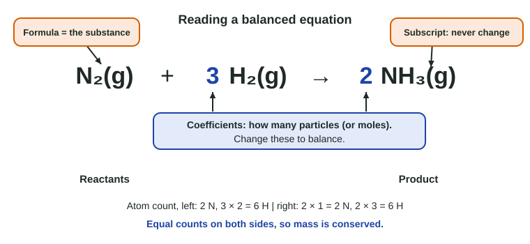

Introduction for Reactions
A chemical reaction rearranges atoms into new substances.
Part 1 · Hook
Why this matters
Part 2 · Before you start
What this builds on
Part 3 · Prerequisite check
Quick check before you start
1. How many atoms are in one molecule of C₂H₆O?
- 9
- 3
- 6
- 8
Show the answer
Add the subscripts: 2 C + 6 H + 1 O = 9 atoms.
- Correct: 9:
- 3:
- 6:
- 8:
2. What is the molar mass of water, H₂O (H 1.008, O 16.00)?
- 18.02 g/mol
- 17.01 g/mol
- 16.00 g/mol
- 34.02 g/mol
Show the answer
2(1.008) + 16.00 = 18.02 g/mol.
- Correct: 18.02 g/mol:
- 17.01 g/mol:
- 16.00 g/mol:
- 34.02 g/mol:
3. What does the label (aq) after a formula mean?
- Dissolved in water
- A pure liquid
- A gas
- A solid
Show the answer
Aqueous means dissolved in water.
- Correct: Dissolved in water:
- A pure liquid:
- A gas:
- A solid:
Part 4 · See it
See it first

Part 5 · Step by step
How it works, step by step
- Bonds break in the reactants and new bonds formthe same atoms end up arranged into new substances
- Atoms are rearranged, never created or destroyedeach kind of atom has the same count on both sides of the equation
- Every atom keeps its massthe total mass before a reaction equals the total mass after, if nothing escapes
- Subscripts say what each substance isyou balance with coefficients only
Part 6 · Key ideas
Key ideas
- In a chemical reaction, bonds break and form so the atoms of the reactants end up in new substances, the products.
- Evidence (a gas, a new solid, a color or temperature change) suggests a reaction; only a new substance proves one.
- A balanced chemical equation has the same number of each kind of atom on both sides. Change coefficients, never subscripts.
- Coefficients count particles and moles, not grams. Conservation of mass: total mass is unchanged when nothing can escape.
Part 7 · Misconception
A common mistake
The wrong idea: If the products weigh less than the reactants, matter was destroyed.
What actually happens: Matter is conserved in every reaction. A drop in measured mass means a product, usually a gas, left the container. Seal the container and the mass stays the same.
Part 8 · Check yourself
Check yourself
Exam-style questions. Anything you miss goes into your review queue.
Particle view
Before and after a reaction
Key: large blue circle labeled N, nitrogen atom; small white circle labeled H, hydrogen atom.
1. Which balanced equation matches the change shown in the two boxes?
- N₂ + 3H₂ → 2NH₃
- N₂ + H₂ → NH₃
- 2N₂ + 6H₂ → 4NH₆
- N + 3H → NH₃
Show the answer
The boxes show 2 N₂ and 6 H₂ becoming 4 NH₃. Dividing by 2 gives the smallest whole-number ratio, 1 : 3 : 2, so N₂ + 3H₂ → 2NH₃. Each side has 2 N and 6 H.
- Correct: N₂ + 3H₂ → 2NH₃: Right: 2 N and 6 H on each side, in the smallest whole-number ratio.
- N₂ + H₂ → NH₃: Unbalanced: 2 N and 2 H on the left but 1 N and 3 H on the right, so atoms would appear and vanish.
- 2N₂ + 6H₂ → 4NH₆: Changes the formula of ammonia to NH₆ to make the atoms fit. Subscripts are fixed by what the substance is; only coefficients may change.
- N + 3H → NH₃: Writes nitrogen and hydrogen as single atoms, but the diagram shows them as two-atom molecules, N₂ and H₂.
2. Count the hydrogen atoms in the After box.
Type a number in atoms.
Show the answer
Four NH₃ molecules × 3 H atoms each = 12 H atoms, the same as the 6 H₂ × 2 = 12 H atoms before. Atoms are conserved.
- Answer: 12 atoms
3. Which quantities are the same in the Before box and the After box? Select all that apply.
- The number of nitrogen atoms
- The total number of molecules
- The total mass of the contents
- The kinds of molecules present
Show the answer
Atoms are rearranged, not created or destroyed, so the number of each kind of atom and the total mass stay the same. The molecules themselves change, and so does their count (8 before, 4 after).
- Correct: The number of nitrogen atoms: Right: 4 N atoms before and 4 after.
- The total number of molecules: There are 8 molecules before and 4 after. Molecules are not conserved; atoms are.
- Correct: The total mass of the contents: Right: the same atoms are present, so the mass is the same.
- The kinds of molecules present: N₂ and H₂ are replaced by NH₃: new substances form, which is what makes this a reaction.
4. A student says the reaction must have destroyed matter, because the After box holds fewer particles. What is the best reply?
- All 16 atoms are still present, now joined into fewer, larger molecules
- Matter is lost as energy, which is why the After box has fewer particles
- Half the hydrogen escaped as a gas, which the diagram leaves out
- The student is right, because each molecule counts as one unit of matter
Show the answer
Count atoms, not molecules: 4 N + 12 H = 16 atoms before and 16 after. The atoms regrouped into four larger molecules.
- Correct: All 16 atoms are still present, now joined into fewer, larger molecules: Right: the same 16 atoms are there in fewer, larger molecules.
- Matter is lost as energy, which is why the After box has fewer particles: Ordinary reactions do not turn measurable mass into energy; every atom is still in the box.
- Half the hydrogen escaped as a gas, which the diagram leaves out: Every hydrogen atom from the Before box is inside an NH₃ molecule after; none is missing.
- The student is right, because each molecule counts as one unit of matter: Molecules are not the unit that is conserved; atoms are, and their number is unchanged.
Data table
Weighing a reaction
A student mixes 2.00 g of solid sodium hydrogen carbonate, NaHCO₃, with 50.0 mL of vinegar on an electronic balance. Bubbles form and the container feels slightly cold. Trial 1 uses an open flask. In Trial 2 the solid sits in a small cup inside a stiff plastic bottle; the bottle is capped tightly, weighed, and then tipped so the solid falls into the vinegar.
| Trial | Container | Mass before mixing (g) | Mass after bubbling stops (g) |
|---|---|---|---|
| 1 | Open | 148.62 | 147.58 |
| 2 | Capped bottle | 151.07 | 151.07 |
5. What mass of gas left the open flask in Trial 1?
Type a number and its unit.
Show the answer
148.62 g − 147.58 g = 1.04 g. When you subtract, keep the decimal places of the measurements (two here), which gives three significant figures.
- Answer: 1.04 g
6. Which claim do the two trials best support?
- Mass is conserved; the open flask lost mass because a gas product escaped
- The reaction destroys about 1 g of matter whenever the flask is left open
- The cap added mass to Trial 2, which hid a loss of mass
- The reactants weigh more than the products, as Trial 1 shows
Show the answer
In the capped bottle, nothing could leave and the mass did not change. The open flask lost 1.04 g because the gas product (carbon dioxide) left the flask. Both trials agree with conservation of mass once every product is counted.
- Correct: Mass is conserved; the open flask lost mass because a gas product escaped: Right: the capped trial shows no change; the open trial lost only the escaping gas.
- The reaction destroys about 1 g of matter whenever the flask is left open: Whether a flask is open cannot change whether matter is conserved; it changes whether a product can leave the balance.
- The cap added mass to Trial 2, which hid a loss of mass: The cap was on the bottle for both weighings in Trial 2, so it adds the same mass before and after.
- The reactants weigh more than the products, as Trial 1 shows: Trial 1 did not weigh all the products: the gas left. Trial 2, which kept everything, shows no difference.
Part 9 · Summary
Summary
Part 10 · Up next
What comes next
Part 11 · Connections